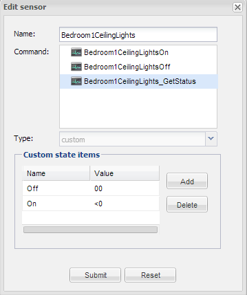

Thank you to all who have contributed to Open Remote it's a great solution. I'm nearing my final goals and once achieved I'm going to purchase the professional designer even though I'm just a hobbyist.
I'm working to integrate the Insteon Hub with Open Remote via HTTP and have almost all the functionality required to complete my OR proof of concept.
I am struggling with the syntax for the custom sensor. If the value returned is greater than zero it should equate to "ON" and update the switch image in the UI.
If I set a specific value, for example FF, and the dimmer is turned on to 100% brightness, the switch is updated correctly in the UI.
If the dimmer is set from the wall switch manually to any value other than FF, the switch does not update in the UI. The sensor is polling every 1 second, I just need the correct syntax for "<0" in the sensor On command.

If anyone can assist I would greatly appreciate it.
Regards
Mark
{kind=link}
|
The custom sensor does not allow for any "logic", only simple "key to value" mapping, so you won't be able to achieve what you want with that. Also, for a UI switch to work correctly, it should be bound to a sensor of type switch. The way I would go around this is to first create a Switch sensor and see if the parsing logic makes it behave as you want (don't remember all the details there, so it might work). If that does not work, I would create a switch sensor backed by a virtual command and bind this one to the UI switch. |
|
Hi Eric, The switch sensor I have works fine as long as the values specified in the custom sensor fields are returned by the existing _GetStatus command so I know this works. Now, as I'm new to OR the next part of your reply is a little tricky to comprehend so I'll attempt to show my interpretation using a basic flow diagram. Use Existing Command when then command.execute("Bedroom1CeilingLights_IMVC", "OFF") else command.execute"(Bedroom1CeilingLights_IMVC", "ON") I hope I have articulated this clearly and with enough detail for others to understand also. The power of OR is becoming more evident and so is the steepness of the learning curve! Regards |
|
Two remarks:
|
|
As Pieter already mentioned you will need 2 rules, something like this: rule "OFF rule" when CustomState(source == "Bedroom1CeilingLights_Status", value == "00") then execute.command("Bedroom1CeilingLights_IMVC", "off"); end rule "ON rule" when CustomState(source == "Bedroom1CeilingLights_Status", value != "00") then execute.command("Bedroom1CeilingLights_IMVC", "on"); end |
|
I have solved a similar situation using In-memory Virtual Command http://openremote.org/display/forums/Scenes?focusedCommentId=22413597&#comment-22413597 hope this helps. |